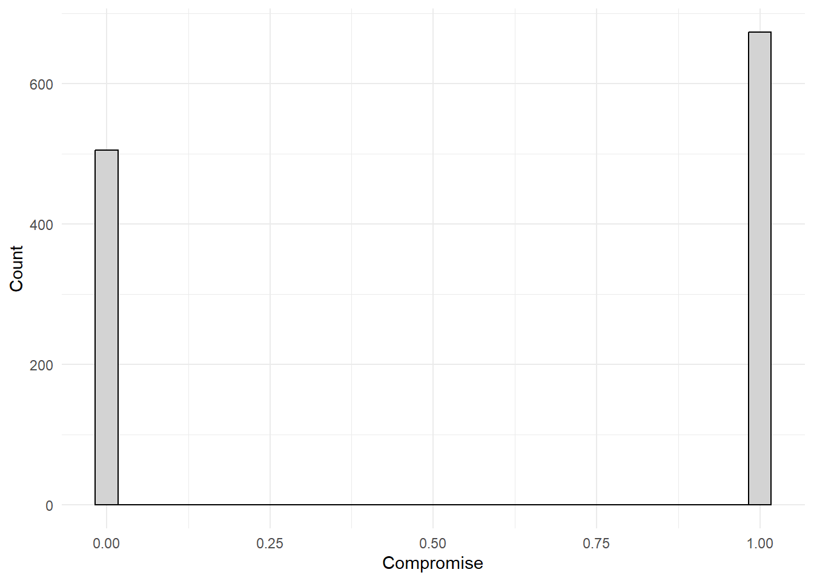
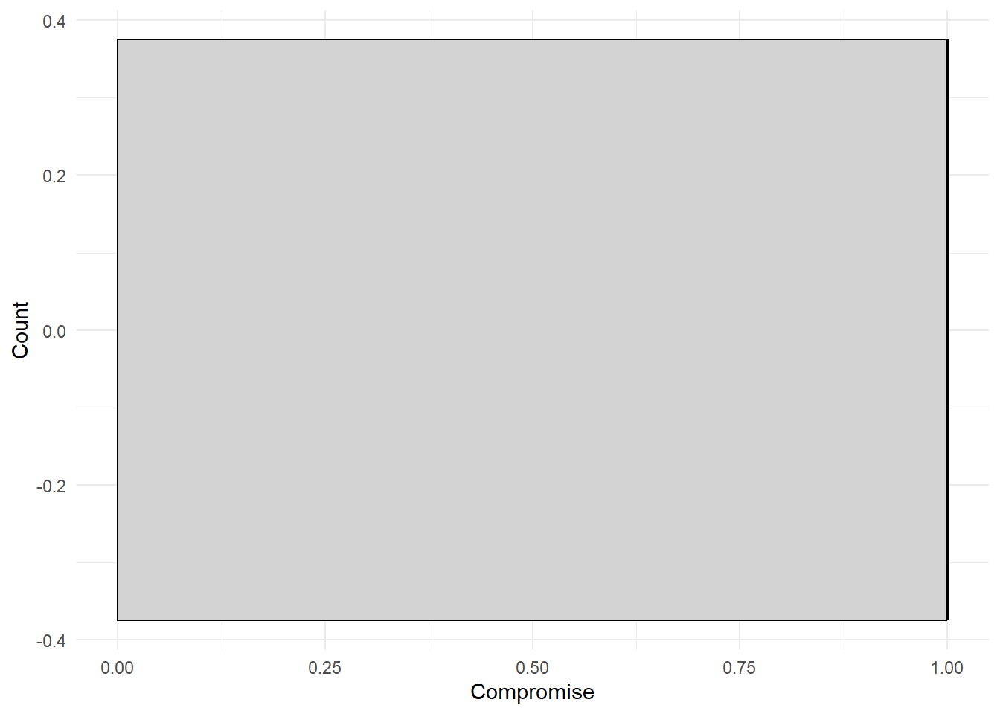
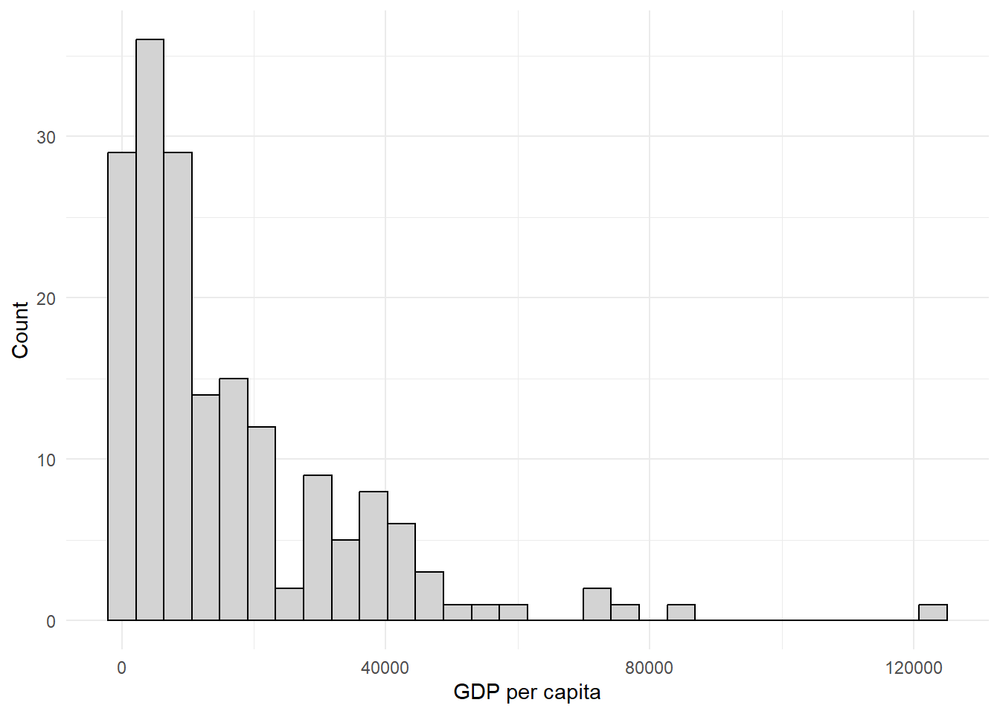
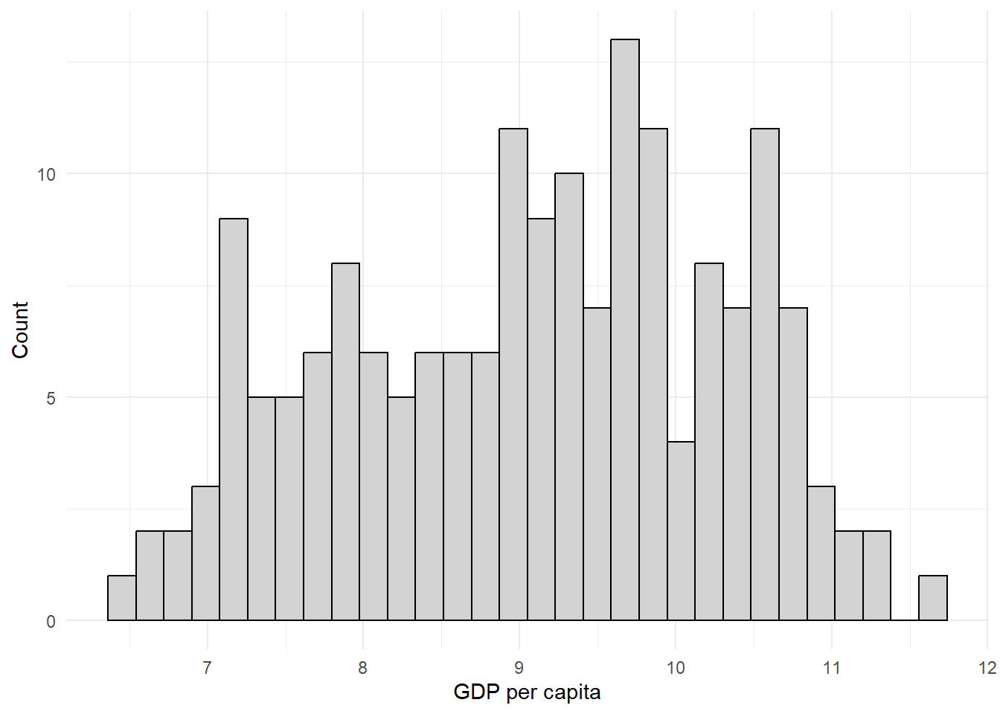

library(dplyr) # for dataset management
library(magrittr) # for pipe operator
library(modelsummary) # for tables
library(ggplot2) # for graphs12 Group Assignment 1
This exercise will show some examples of how you might do the code for the first Group Assignment.
12.1 Part I
This week’s assignment is designed to build familiarity with the data we will be using this semester. Using either the ‘states’ or ‘world’ data, make a discovery! Learn something you didn’t know before. Pick one variable that interests you: 1. Describe it. Is it continuous or categorical?
Continuous variable: can theoretically run from any value from \((-\infty, \infty)\). One good sign is that it includes decimals. Categorical variable: takes discrete values. One good sign is that it includes integers (full numbers).
In the example for Part I, I am going to use the compromise variable from the nes dataset.
- Talk about its features in terms of its central tendency and dispersion. Calculate the mean and standard deviation of your variable. Are the means and medians similar? Why or why not?
nes %>% # grab the nes dataset, and apply the following functions
mutate( # transform an existing variable and make a new one
compromise = case_when( # overwrite the compromise variable with the following conditions...
compromise == "Compromies to get things done" ~ 1, #... when it equals this statement, set it to the value of 1
compromise == "Sticks to his or her principles" ~ 0 #... when it equals this statement, set it to the value of 0
)
) %>%
select( # grab a variable...
compromise # ... specifically the compromise variable
) %>%
rename( # rename a variable...
Compromise = compromise #... specifically the compromise variable
) %>%
datasummary_skim( # make a table of summary statistics
., # using the data from above
notes = "Data source: NES dataset.", # add these notes to the table
output = "part_1_summary_stats.docx" # save the table in a word docx file
)| Unique (#) | Missing (%) | Mean | SD | Min | Median | Max | ||
|---|---|---|---|---|---|---|---|---|
| Compromise | 2 | 0 | 0.6 | 0.5 | 0.0 | 1.0 | 1.0 | |
| Data source: NES dataset. |
Then interpret what these things mean: - What does the mean represent? - What does the standard deviation represent? - What does the median represent? - Does the mean and median being different imply a skew?
- Explore your variable using either a histogram or boxplot. Are there any interesting or surprising values?
nes %>% # grab the nes dataset, and apply the following functions
mutate( # transform an existing variable and make a new one
compromise = case_when( # overwrite the compromise variable with the following conditions...
compromise == "Compromies to get things done" ~ 1, #... when it equals this statement, set it to the value of 1
compromise == "Sticks to his or her principles" ~ 0 #... when it equals this statement, set it to the value of 0
)
) %>%
ggplot() + # make a ggplot object...
geom_histogram( #... specifically a histogram...
aes(
x = compromise # put the compromise variable on the x-axis
),
fill = "#D3D3D3", # ...fill the bars with light grey...
color = "#000000" #... make the outlines of the bars black...
) +
theme_minimal() + # apply the minimal theme to it
labs( # ... clean up the labels...
y = "Count", # ...change the y-axis to this...
x = "Compromise", # ... change the x-axis to this...
notes = "Data source: NES dataset" # ... add notes to the plot...
)
nes %>% # grab the nes dataset, and apply the following functions
mutate( # transform an existing variable and make a new one
compromise = case_when( # overwrite the compromise variable with the following conditions...
compromise == "Compromies to get things done" ~ 1, #... when it equals this statement, set it to the value of 1
compromise == "Sticks to his or her principles" ~ 0 #... when it equals this statement, set it to the value of 0
)
) %>%
ggplot() + # make a ggplot object ...
geom_boxplot( #... specifically a boxplot ...
aes(
x = compromise # put the compromise variable on the x axis
),
fill = "#D3D3D3", # ...fill the bars with light grey...
color = "#000000" #... make the outlines of the bars black...
) +
theme_minimal() + # apply the minimal theme to it
labs( # ... clean up the labels...
y = "Count", # ...change the y-axis to this...
x = "Compromise", # ... change the x-axis to this...
notes = "Data source: NES dataset" # ... add notes to the plot...
)
Then look around these plots! The data are telling a story. Translate what that story is. Is there something in there that looks weird? Are there some observations that are super high or low relative to others? Are the data really spaced out? Find some interesting pieces of information conveyed by the plot.
12.2 Part II
Data rarely come to us in the form we would like. Either the data do not align with the theory we are interested in exploring or the variables are so skewed that it’s extremely hard to discover any underlying patterns. This exercise takes one common problem we face in data analysis and asks you to make the proper transformation in order to answer a specific question or to discover an important underlying pattern you may not have observed otherwise.
- Using the ‘world’ data, summarize (mean, variance, median) GDP per capita (gdppc) and create a histogram. What do you notice?
world %>% # grab the world dataset and apply the following functions to it
select( # grab a column...
gdppc # ...specifically the gdppc column
) %>%
rename( # rename a column...
`GDP per capita` = gdppc #... specifically the gdppc column
) %>%
datasummary_skim( # make a table...
., #... with the above data...
notes = "Data source: World dataset", #... add a note to the table...
output = "summary_stats_two.docx" #... and store the results into a word document
)| Unique (#) | Missing (%) | Mean | SD | Min | Median | Max | ||
|---|---|---|---|---|---|---|---|---|
| GDP per capita | 177 | 3 | 16326.8 | 18456.6 | 683.8 | 9863.2 | 123593.0 | |
| Data source: World dataset |
world %>% # grab the world dataset
ggplot() + # make a ggplot object...
geom_histogram( #... make a histogram...
aes(x = gdppc), # ... put the gdppc column on the x axis
fill = "#D3D3D3", # ...fill the bars with light grey...
color = "#000000" #... make the outlines of the bars black...
) +
theme_minimal() + # apply the minimal theme to it
labs( # ... clean up the labels...
y = "Count", # ...change the y-axis to this...
x = "GDP per capita", # ... change the x-axis to this...
notes = "Data source: World dataset" # ... add notes to the plot...
)
You can mention that this has a right skew, that the mean and median do not match, discuss the standard deviation, can talk about how there are some countries that has a massive GDP per capita relative to most countries, etc.
- Sometimes when data are positive and skewed towards the right tail of the distribution we take the log transformation. Create a new variable that is the log of GDP per capita.
A couple ways to do this. Here is the way I like to do it.
world_clean <- world %>% # grab the world dataset and apply the following functions with the results stored in world_clean
mutate( # make a transformation to an existing variable and store it in new one
log_gdppc = log(gdppc) # make new variable called log_gdppc that is equal to the log of the gdppc variable
)- Summarize (mean, variance, median) this new variable. Create a histogram. How does this compare to the original variable of GDP per capita?
world_clean %>% # grab the world_clean dataset and apply the following functions to it
select( # grab a column...
log_gdppc # ...specifically the log_gdppc column
) %>%
rename( # rename a column...
`log(GDP per capita)` = log_gdppc #... specifically the log_gdppc column
) %>%
datasummary_skim( # make a table...
., #... with the above data...
notes = "Data source: World dataset", #... add a note to the table...
output = "summary_stats_log_gdppc.docx" #... and store the results into a word document
)| Unique (#) | Missing (%) | Mean | SD | Min | Median | Max | ||
|---|---|---|---|---|---|---|---|---|
| log(GDP per capita) | 177 | 3 | 9.1 | 1.2 | 6.5 | 9.2 | 11.7 | |
| Data source: World dataset |
world_clean %>% # grab the world_clean dataset
ggplot() + # make a ggplot object...
geom_histogram( #... make a histogram...
aes(x = log_gdppc), # ... put the log_gdppc column on the x axis
fill = "#D3D3D3", # ...fill the bars with light grey...
color = "#000000" #... make the outlines of the bars black...
) +
theme_minimal() + # apply the minimal theme to it
labs( # ... clean up the labels...
y = "Count", # ...change the y-axis to this...
x = "GDP per capita", # ... change the x-axis to this...
notes = "Data source: World dataset" # ... add notes to the plot...
)
12.3 Some final notes:
- Make sure that you answer all parts to a question
- Make sure that when writing your RScripts, that things are organized! Comment your code, have your code in the correct order, etc.
- If you are stuck on these things, look at Dr. Philips’ slides and his labs. I also encourage you to look through this recitation handout as well as a resource!
- For a full RScript of this exercise, go to this page